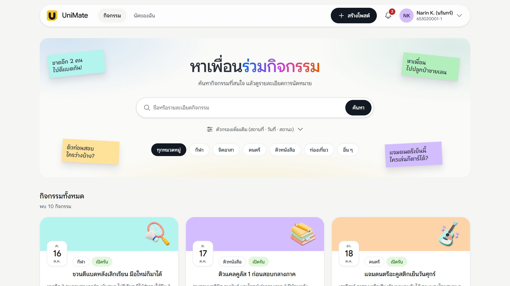
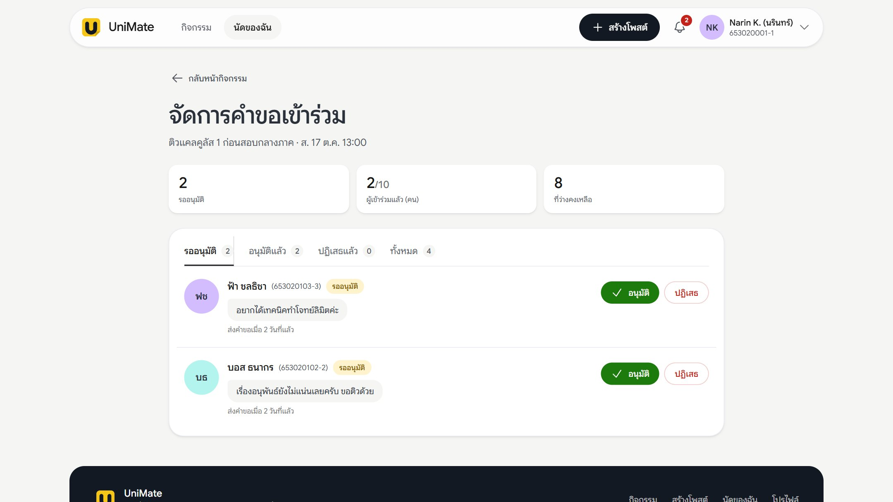
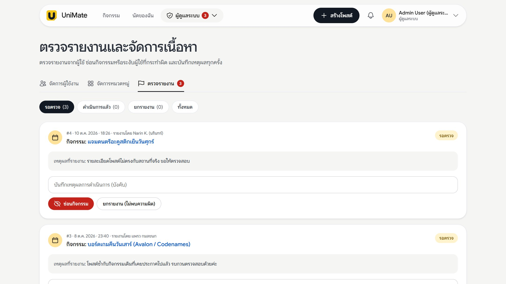

UniMate
เว็บแอปจับกลุ่มหาเพื่อน
ร่วมทำกิจกรรมในมหาวิทยาลัย
สมาชิกกลุ่มGroup AI04 · Sec 1
กิจกรรมมีทุกวัน
แต่การหาเพื่อนยังไม่เป็นระบบ
โพสต์ชวนกันกระจายอยู่หลายกลุ่มแชต ข้อมูลเวลา สถานที่ และจำนวนคนไม่ครบ ตัดสินใจยากและนัดล่มง่าย
ข้อมูลกระจัดกระจาย
ต้องไล่อ่านหลายกลุ่ม โพสต์เก่าถูกดันหายเร็ว ค้นย้อนหลังไม่ได้
จัดคนไม่ลงตัว
ไม่รู้ว่ายังขาดกี่คน ใครยืนยันแล้ว และใครยังรอคำตอบ
ขาดความน่าเชื่อถือ
ไม่มีประวัติว่าใครมาจริง และไม่มีช่องทางแจ้งเมื่อเจอปัญหา
รวม หา · นัด · เชื่อใจ ไว้ในที่เดียว
ค้นหาด้วยคำค้น กรองหมวดหมู่ สถานที่ วันที่ และสถานะ
ส่งคำขอเข้าร่วม ผู้จัดอนุมัติไม่เกินจำนวนที่รับ แล้วเช็กชื่อ
รีวิวได้เฉพาะคนที่มาจริง และรายงานปัญหาให้ผู้ดูแลตรวจ

จับคู่ได้เร็วขึ้น นัดแล้วเชื่อถือได้
รวมกิจกรรมไว้ในที่เดียว
ให้นักศึกษาค้นหาและเปรียบเทียบกิจกรรมในมหาวิทยาลัยได้จากหน้าเดียว
รับสมาชิกอย่างโปร่งใส
เห็นจำนวนที่รับ ที่ว่าง สถานะคำขอ และรายชื่อผู้เข้าร่วม
ลดปัญหาการนัดล่ม
ยืนยันการเข้าร่วม เช็กชื่อ และให้คะแนนหลังจบกิจกรรม
ใช้งานได้จริงตามข้อกำหนด
พัฒนาด้วย Laravel กับฐานข้อมูล SQLite/MySQL และแบ่งสิทธิ์ผู้ใช้มากกว่า 1 ระดับ
ผู้ใช้ 3 กลุ่ม สิทธิ์ต่างกันชัดเจน
ผู้ยังไม่เข้าสู่ระบบ
- สมัครสมาชิกนักศึกษา
- เข้าสู่ระบบ
- บัญชีที่ถูกระงับเข้าระบบไม่ได้
นักศึกษา
- ค้นหา ขอเข้าร่วม ติดตามนัดของฉัน
- สร้างและจัดการกิจกรรมของตัวเอง
- อนุมัติคำขอ เช็กชื่อผู้เข้าร่วม
- รีวิว รายงาน แจ้งเตือน โปรไฟล์
ผู้ดูแลระบบ
- ดูสถิติและค้นหาบัญชีผู้ใช้
- ระงับ / เปิดใช้งานบัญชี
- เพิ่ม แก้ไข ลบหมวดหมู่
- ตรวจรายงาน ซ่อนกิจกรรม บันทึกประวัติ
ค้นหา ขอเข้าร่วม แล้วติดตามนัด
ค้นหาและกรอง
คำค้น หมวดหมู่ สถานที่ วันที่ สถานะ แบ่งหน้าละ 12 รายการ
ดูรายละเอียด
วันเวลา สถานที่ ที่ว่าง ผู้จัด และคะแนนรีวิว
ขอเข้าร่วม
ส่งคำขอพร้อมข้อความถึงผู้จัด ถอนคำขอหรือถอนตัวได้
นัดของฉัน
รวมกิจกรรมที่สร้างและที่ขอเข้าร่วม พร้อมสถานะแต่ละรายการ
แจ้งเตือน
แจ้งผลอนุมัติ/ปฏิเสธคำขอ และผลการตรวจรายงาน
โปรไฟล์
แก้ชื่อ รหัสนักศึกษา Bio รูปโปรไฟล์ และรหัสผ่าน
สร้างโพสต์ รับคน และเช็กชื่อ
สร้าง / แก้ไขโพสต์
ชื่อ หมวด สถานที่ เวลาเริ่ม–จบ และจำนวนคนที่รับ
ยกเลิกกิจกรรม
เก็บไว้เป็นประวัติ และแก้ไขต่อไม่ได้
อนุมัติ / ปฏิเสธคำขอ
อนุมัติได้ไม่เกินจำนวนที่รับ ผู้ขอได้รับแจ้งเตือน
เช็กชื่อ มา / ขาด
เฉพาะคนที่อนุมัติแล้ว ใช้เป็นเงื่อนไขการรีวิว

ดูแลบัญชี หมวดหมู่ และรายงาน
จัดการผู้ใช้
สถิติสมาชิก ค้นหา กรองสถานะ ระงับหรือเปิดใช้งานบัญชี
จัดการหมวดหมู่
เพิ่ม เปลี่ยนชื่อ ลบได้เฉพาะหมวดที่ยังไม่มีกิจกรรม
ตรวจรายงาน
ซ่อนกิจกรรม ระงับผู้ใช้ หรือยกรายงาน ต้องบันทึกเหตุผลทุกครั้ง
ประวัติการดำเนินการ
ย้อนดูได้ว่าใครทำอะไร และแจ้งผลกลับไปยังผู้รายงาน

จากโพสต์ ถึงรีวิว ใน 6 ขั้น
สร้างโพสต์
ผู้จัดกำหนดวัน เวลา สถานที่ จำนวนคน
ค้นหา
นักศึกษากรองหมวดหมู่ สถานที่ วันที่
ขอเข้าร่วม
สถานะ “รออนุมัติ” แนบข้อความได้
อนุมัติ
ไม่เกินจำนวนที่รับ ผู้ขอได้แจ้งเตือน
เช็กชื่อ
ผู้จัดบันทึก มา / ขาด
รีวิว
หลังจบกิจกรรม เฉพาะคนที่มาจริง
ทำอะไรได้ และไม่ได้ทำอะไร
อยู่ในขอบเขตIn scope
- บัญชี 2 บทบาท (นักศึกษา / ผู้ดูแลระบบ) และการระงับบัญชี
- โพสต์กิจกรรม: สร้าง แก้ไข ยกเลิก ค้นหา กรอง
- คำขอเข้าร่วม อนุมัติ / ปฏิเสธ จำกัดตามจำนวนที่รับ
- เช็กชื่อ นัดของฉัน และการแจ้งเตือนภายในเว็บ
- รีวิวหลังจบกิจกรรม รายงานปัญหา และการตรวจของผู้ดูแล
- ใช้งานผ่านเว็บเบราว์เซอร์ ทั้งคอมพิวเตอร์และมือถือ
ไม่อยู่ในขอบเขตOut
- ซื้อขายสินค้าและชำระเงิน (ข้อห้ามของวิชา)
- แชตระหว่างผู้ใช้
- แจ้งเตือนทางอีเมลหรือพุช
- อัปโหลดรูปกิจกรรม และแผนที่
- เชื่อมบัญชีมหาวิทยาลัย / แอปมือถือ
ตรวจที่เซิร์ฟเวอร์ ไม่ใช่แค่ซ่อนปุ่ม
| กฎ | ผลลัพธ์เมื่อฝ่าฝืน / กลไก |
|---|---|
| แก้ไขหรือยกเลิกโพสต์ได้เฉพาะเจ้าของ | ผู้อื่น (รวม Admin) ได้ 403 · ActivityPolicy |
| กิจกรรมที่ยกเลิกแล้วแก้ไขต่อไม่ได้ | ได้ 409 |
| ขอเข้าร่วมได้เมื่อยังไม่เริ่ม ไม่ใช่โพสต์ตัวเอง ไม่ถูกซ่อน และยังไม่เต็ม | ปุ่มไม่แสดง และเซิร์ฟเวอร์ปฏิเสธ |
| อนุมัติเกินจำนวนที่รับไม่ได้ แม้กดพร้อมกัน | DB transaction + lockForUpdate |
| เช็กชื่อได้เฉพาะผู้ที่อนุมัติแล้ว | แจ้งข้อผิดพลาด ไม่บันทึก |
| รีวิวได้ครั้งเดียว หลังกิจกรรมจบ และต้องถูกเช็กชื่อว่า “มา” | แจ้งเหตุผล · unique (activity, user) |
| รายงานตัวเองไม่ได้ และรายงานซ้ำระหว่างรอตรวจไม่ได้ | แจ้งข้อผิดพลาด |
| บัญชีที่ถูกระงับเข้าสู่ระบบไม่ได้ | ถูกออกจากระบบ · Middleware active |
หนึ่งคำขอ ผ่าน Laravel อย่างไร
นำสิ่งที่เรียนมาใช้
- HTML / CSS: โครงหน้า ฟอร์ม และ layout ที่รองรับมือถือ
- JavaScript: โต้ตอบในหน้า โดยไม่ต้องโหลดใหม่
- PHP + Laravel: routing, controller, Blade, validation
- Eloquent ORM: ความสัมพันธ์ระหว่างตาราง
- Authentication และการแบ่งสิทธิ์ผู้ใช้
8 ตารางหลัก เชื่อมกันด้วย Eloquent
users
- name, student_id, email
- role: student | admin
- status: active | suspended
activities
- user_id users
- category_id categories
- starts_at, ends_at, capacity
- status, hidden_at
categories
- name (unique)
- ลบได้เมื่อไม่มีกิจกรรม
activity_participants
- activity_id, user_id (unique)
- status: pending · approved
- · rejected · cancelled
- attendance: present | absent
reviews
- activity_id, user_id (unique)
- rating 1–5, comment
reports
- reporter_id users
- target: activity | user
- status, admin_note
moderation_logs
- admin_id users
- report_id reports
- action, reason
notifications
- notifiable users
- data, read_at
ทุกกฎข้างต้นมีชุดทดสอบรองรับ
| ชุดทดสอบ | ตรวจอะไร |
|---|---|
| ActivitiesTest | สร้าง/ค้นหา/แก้ไข/ยกเลิก ปลอมเจ้าของไม่ได้ จัดการหมวดหมู่ |
| ParticipationTest | ขอเข้าร่วม อนุมัติไม่เกินจำนวน เช็กชื่อ แจ้งเตือน |
| ReviewReportTest | เงื่อนไขรีวิว รายงานซ้ำ ซ่อน/เลิกซ่อน ประวัติ |
| UiStatesTest | สถานะบนหน้าจอ เช่น เต็ม จบแล้ว ยกเลิก |
เดโมเว็บจริง 7 ขั้น
บัญชีทดสอบ
- นักศึกษา
- student@unimate.ac.th
- ผู้เข้าร่วมที่เช็กชื่อแล้ว
- attendee@unimate.ac.th
- บัญชีถูกระงับ
- suspended@unimate.ac.th
- ผู้ดูแลระบบ
- admin@unimate.ac.th
รหัสผ่านอยู่ใน UserSeeder
ขอบคุณ
ถามได้เลย
UniMate ช่วยให้นักศึกษาหาเพื่อนร่วมกิจกรรม นัดได้ชัดเจน และเชื่อถือกันได้ — ภาพหน้าจอการทำงานทั้งหมดอยู่ในภาคผนวกที่ส่งใน Classroom
Mate